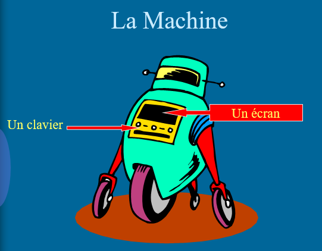

I - Introduction au développement
L'objectif de ce chapitre est de découvrir les notions fondamentales liées au développement. En particulier au développement en langage C#
A - Qu'est ce qu'une machine ?
Oubliez terminator ! La machine est un ensemble de composants électroniques.
La machine a des caractéristiques peu pratiques :
- elle est muette : pour connaitre une information, elle doit poser une question, le plus souvent à l'écran,
- elle est sourde : pour obtenir une information, elle doit analyser les données saisie, le plus souvent au clavier,
- elle est limitée : elle ne peut que faire des calcul, à partir des informations saisie et elle doit pouvoir les stocker,
- elle est muette : une fois ses calculs faits, elle devra les restituer, le plus souvent à l'écran.
B - L ’art et la manière de bien programmer
a - Principe de programmation
Programmer, c ’est quoi ?
- Utiliser un langage de programmation,
- Donner des ordres clairs à l ’ordinateur,
- Etre capable de structurer ces ordres.
Programmer c'est répondre à un besoin !
- Analyse des besoins et de l ’application à mettre en place,
- Développement de l ’application,
- Mise en œuvre des éventuelles bases de données,
- Programmation,
- Déploiement et maintenance.
Avant de programmer...
Donner des ordres à un ordinateur, c ’est :
- Utiliser un vocabulaire qu ’il comprend,
- Respecter un certain ordre afin d ’aboutir au résultat souhaité.
b - Les langages de programmation
Il existe plusieurs langages de programmation, certains sont propres à une technologie, d’autres n’existent plus tandis que de nouveaux langages naissent pour répondre à de nouveaux besoins.
Le Langage Machine
Il s’agit du langage le plus proche du binaire. Le microprocesseur ne peut comprendre que des codes binaires mais les programmeurs préfèrent des mots.
Le langage machine utilise des codes binaires, est l’assembleur utilise donc un dictionnaire dans lequel chaque mot correspond à un code binaire compréhensible par le processeur.
MOV EAX, OXOlOZO3O4 A101020304Si c’est le langage le plus rapide, il a comme inconvénient que chaque processeur utilise ses propres codes (EAX est un registre sur les processeurs Intel, qui n’existe pas sur ARM, Motorola, ...)
Les Langages Compilés
Pour éviter l’inconvénient de devoir taper plusieurs codes pour faire le même programme sur plusieurs processeurs, sont apparus les langages compilés.
Le langage de développement utilise des instructions proches des mots humains (en anglais) : for, if, else, print, etc.
Exemple de programme en Delphi (Pascal)
procedure TForm1.Draw();
var
i, j, k: Integer;
begin
for j:=6 to 4 do
for i:=0 to 4 do
begin
k:=tab_int[i,j];
img_screen.Canvas.Draw(i*100,j*100,tab_img[k].Picture.Ghaphic);
end;
end;Il faut ensuite utiliser un programme appelé compilateur, qui va traduire ces instructions en code machine. Il est donc évident qu’il faut créer autant de compilateur qu’il existe de processeur. Pour le développeur, c’est transparent (c’est la société qui vend les compilateurs qui fait le travail).
Il reste cependant un inconvénient : chaque machine utilise du matériel différent (résolution d’écran différente, emplacement mémoire différent, etc) et il reste difficile de créer un programme compatible avec plusieurs architectures.
Dans un langage compilé, le compilateur génére un nouveau fichier qui sera autonome, c'est-à-dire qui n'aura plus besoin d'un programme autre que lui pour s'exécuter; on dit d'ailleurs que ce fichier est exécutable. le programme est directement exécuté sur l'ordinateur, donc il sera en général plus rapide que le même programme dans un langage interprété.
Les langages interprétés.
L'interprétation du code source est un processus « pas à pas » : l'interpréteur va exécuter les lignes du code une par une, en décidant à chaque étape ce qu'il va faire ensuite.
L'interpréteur se trouve le plus souvent dans le navigateur. Il execute les langages comme php, javacript, phyton ...
C - La culture et les bonnes pratiques
a - Garder des choses simples
L'art du technicien, c'est chercher la simplicité. Plus c'est simple, plus c'est mignon.
La simplicité s'exerce à deux niveaux :
- le niveau technique,
- le niveau de temps
Que ce soit dans un cadre professionnel, scolaire ou personnelle, les journées ne font que 24 heures, et personne ne passe son temps à faire toujours et tout le temps la même chose
Pour appréhender un problème, il faut le faire méthodiquement,
partir du simple pour aller au plus compliqué.
En informatique et souvent dans d'autres domaines, un
problème compliqué est une somme de problèmes simple.
Le tout est de faire une bonne analyse, c'est ce à quoi doit
aboutir un débutant, avant de foncer tête bêche.
L'automatisation
Répétition
Il ne faut pas faire plus de 3 fois la même chose.
Si vous voyez quelque chose qui se répète, votre premier réflexe doit être de chercher à factoriser le code, parce que moins de code, c'est moins de bugs, et c'est un programme plus facile à comprendre.
Pour ne pas se répéter il faut automatiser les processus.
Ceci est vrai :
- pour le code,
- pour des applications, comme votre ide, que ce soit visual studio, sublime text ...
il est nécessaire d’identifier :
- les points de répétition,
- les points à faible valeur ajouté, qui peuvent êtres automatisés.
b - La culture du savoir
Documentez vous
Super Hero
Personne ne connait tout sur tout, même les professionnels les plus aguerris. Cela ne se voit qu'à la télévisionf!
Voilà pourquoi, il faut toujours avoir une documentation avec soi. Peut importe qu'elle soit technique, de cours ou de notes.
Commentez votre code
Le code n'est pas quelque chose de fixe dans le temps, la technicité du programmeur évolue, ainsi que son analyse des problèmes. Ceci va donc influer sur sa façon de coder.
Un code se butine, c'est à dire que son programmeur le fait évoluer, il le modifie, qu'il soit ou non débutant.
De plus, le code n'est pas forcément destiné à une seule personne, la programmation est le plus souvent un travail d'équipe, et le code doit être "lisible" pour toute l'équipe.
Commenter son code ce n'est pas commenter un boucle ou un si. C'est avant tout donnez les exemples qui illustrent les intentions du programmeur.
Tester son code
Le test simple consiste à prévoir tous les cas possibles auxquels sera soumis le code. C'est d'ailleurs ces cas qui servirons le plus souvent de commentaire.
Lorsque les programmes sont plus long et plus complexes, le programmeur aura recours aux tests automatisés. Ils limiteront les erreurs.
c - La qualité
La qualité est quelque chose de subjectif. Elle varie en fonction
de la personne concernée.
Elle sera différente selon que l'on soit :
- un débutant,
- un étudiant,
- un professeur,
- un développeur,
- un client.
Il faut se donner des bonnes pratiques pour soi et ses collègues.
Les bonnes pratiques sont souvent liées à une technologie ou un métier.